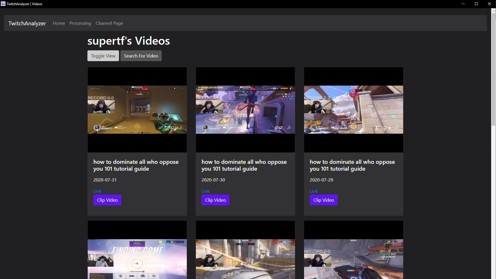
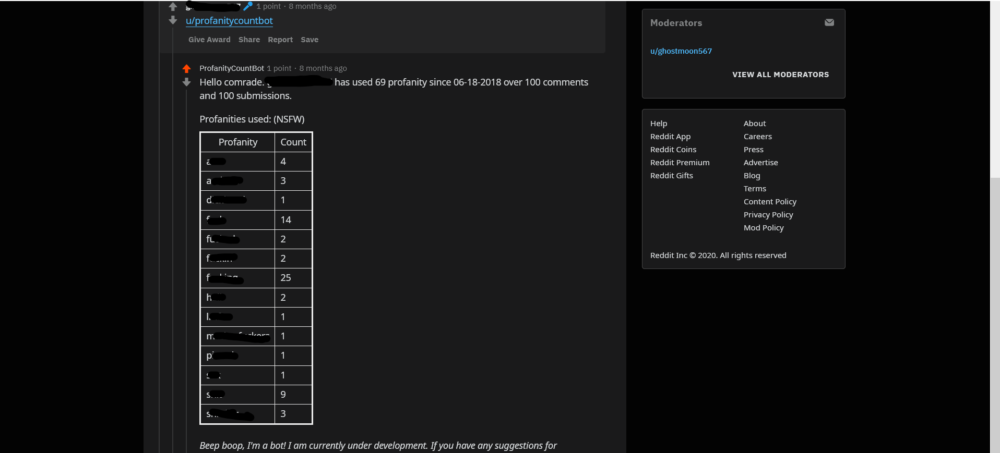
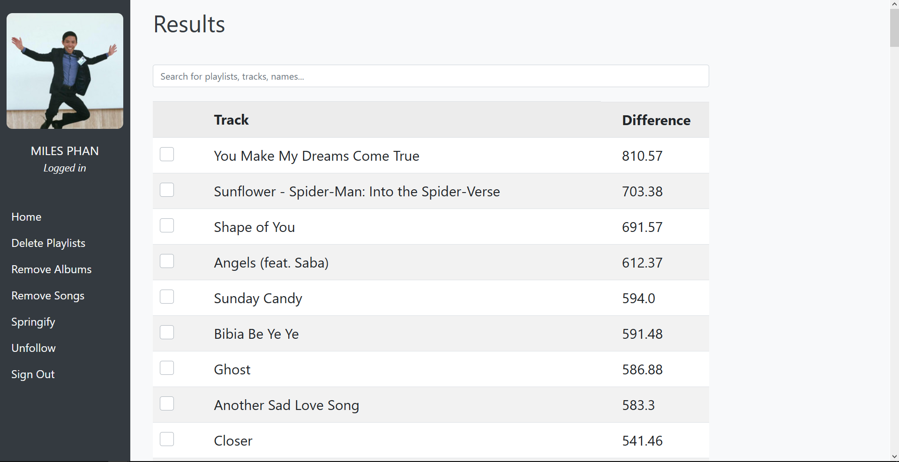
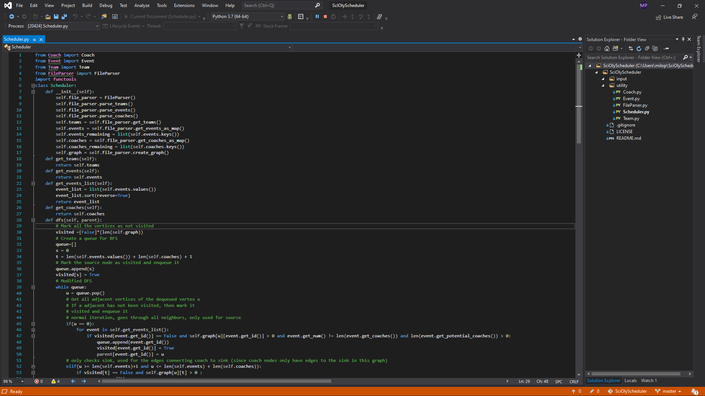

Hi, my name is
I'm a student at USC studying Computer Science/Computer Engineering. In school, at work, and on my own time I've made embedded system projects, standalone apps, and websites.
Hey there! I'm Miles, a prospective software engineer currently residing in Los Angeles, CA.
I enjoy building things that people can use. Sometimes there's a hardware component, other times it's pure software. Regardless, all of my projects try to make life a little easier.
I'm currently in my last year of undergrad at USC (Woohoo!) studying Computer Science/Computer Engineering. I aspire toward a career that coincides with my passion for crafting interesting and useful products.
Outside of CS, I love reading, watching movies, and playing an ungodly amount of Civ VI.
Here are a few languages and technologies that I've picked up and used at school or work:

TwitchAnalyzer is a standalone app that allows users to analyze Twitch VODs to find great clips. Users can create custom categories based on a channel's emotes to grab funny, cool, sad, and other moments.
The primary purpose of the app is to aid content creators in creating videos from VODs, since finding good clips to use in a video is a time consuming process.
TwitchAnalyzer was built in Python3 with the help of libraries like Eel and Twitch-Python
Windows 10 (64 bit) Mac OS Catalina (64 bit)The ProfanityCountBot is a Reddit bot that reports how many profanities a user has said over thie reddit lifetime.
Call the bot with a simple mention followed by the username: u/ProfanityCountBot username
Source

The Spotify web player and desktop app provide a lot of functionality, but there are some features that are missing. Deleting multiple playlists at once, removing songs from your entire library, and unfollowing multiple artists, are just some of the features that Spotify doesn't currently support.
Built using Python3 and Flask, Springify is a prototype app meant to implement these missing features.
SourceA friend from the Yale Science Olympiad E-Board mentioned one day how time consuming scheduling Science Olympiad competitions was. Trying to organize proctors for the different events when each proctor had their own preferences and doubled as coaches for the different teams (so no two coaches could proctor at the same time) added layers of complexity that were hard to deal with
SciOlyScheduler handles mapping proctors to events with all the parameters mentioned above and reduces the tiem the process takes from days to seconds. Using a modified Edmond-Karp algorithm, the console app removes all hassle and makes scheduling super easy and super fast.
Source
In my embedded systems course, I worked with RaspberryPi's and sensors for the first time and really enjoyed the experience. For the final project, I made a makeshift HVAC device and in the spirit of recreating home systems, I purchased my own sensors and crafted a small security system.
With two Raspberry Pis and a host of Grove Pi sensors, I setup shop. One Pi acts as the main detection and notification device while the other acts as a failsafe, ensuring that if the other is disabled before raising the alarm, the owner will still be notified of an intruder.
SourceIf you like what I've done and would like to reach out to me, click the button below to send me an email. I'm always looking for new and exciting work to do!
Email Me